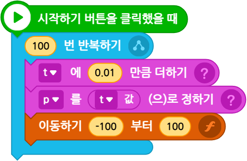
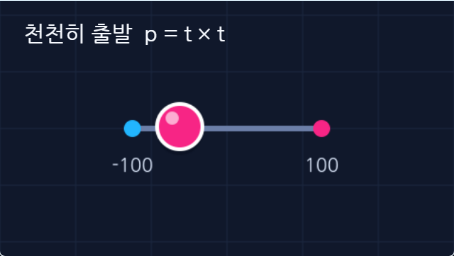
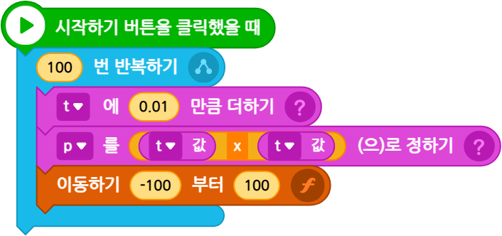
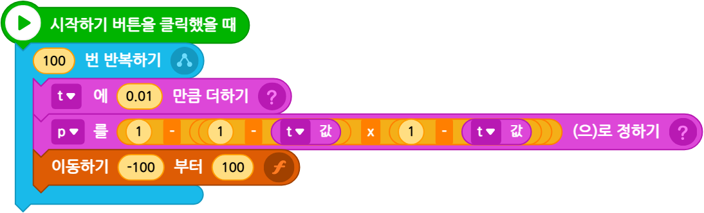
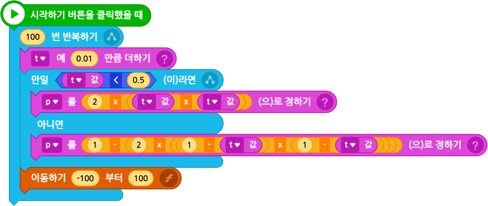

ENTRY MOTION LAB
이징 함수로
움직임 만들기
t 하나로 시작해서
속도의 느낌까지 바꿔 봅니다.
01 · 관찰
도착 시간은 같은데
느낌은 왜 다를까?
세 공은 같은 곳에서 출발해
같은 때에 도착합니다.
같은 시간, 같은 거리
일정하게
천천히 출발
천천히 도착
양쪽 천천히
02 · 수업 지도
복잡한 준비 없이 t 하나부터 시작
10부터 100x = t × 100
2-100부터 100x = t × 200 - 100
3이동 함수p만 바꿔 재사용
매 단계마다 먼저 실행하고, 달라진 블록만 찾습니다.
03 · 1단계
0.01을 100번 더하면 t가 1이 된다
00.010.020.991
100번 × 0.01 = 1
t는 움직임이 얼마나 진행됐는지 알려 주는 숫자입니다.
04 · 1단계
t가 커질 때마다 x 위치도 커진다
①t에 0.01 더하기
②x를 t × 100으로 정하기
③100번 반복하기
05 · 확인
t에 100을 곱하면 0부터 100이 된다
tx = t × 100
00
0.2525
0.550
1100
06 · 2단계
무대 왼쪽에서 오른쪽까지는 -100부터 100
t × 2000부터 200
+
-100전체를 왼쪽으로 이동
=
x-100부터 100
t=0이면 x=-100t=0.5이면 x=0t=1이면 x=100
07 · 2단계
이전 코드에서 × 200 + (-100)만 바뀐다
이전
t × 100
지금t × 200 + (-100)
08 · 3단계 준비
숫자 두 개를 시작과 끝으로 바꾸기
p×( 끝 - 시작 )+시작
시작=-100, 끝=100
p × (100 - (-100)) + (-100)
p × 200 + (-100)
p는 0부터 1까지 움직이는 값입니다. 처음에는 p=t로 둡니다.
09 · 사용자 함수
위치 계산은 이동하기 함수에 한 번만 적는다
문자/숫자값 1시작 위치
문자/숫자값 2끝 위치
p현재 진행값
10 · 기본형 완성
p=t로 정하고 이동 함수를 부른다

①t를 0.01만큼 늘리기
②p를 t로 정하기
③-100부터 100까지 이동하기
11 · 실습 파일
막힌 단계부터
직접 열어 보기

12 · 이징의 자리
이동 함수는 그대로 두고 p 한 줄만 바꾼다
t0부터 1
›
p 식속도의 느낌
›
이동하기시작과 끝
이징 함수는 t를 p로 바꾸는 계산입니다.
13 · 일정하게
기본형 p = t
p = t
t가 절반이면 p도 절반입니다.
처음부터 끝까지 속도가 같습니다.
t = 0.50p = 0.50
14 · 천천히 출발
t를 한 번 더 곱한 p = t × t
0.5 × 0.5 = 0.25
중간인데 25%만 움직입니다.

t = 0.50p = 0.25
15 · 선택 도전
남은 양을 제곱한 p = 1 - (1-t) × (1-t)
t=0.5일 때 p=0.75
먼저 많이 가고 천천히 멈춥니다.

t = 0.50p = 0.75
16 · 양쪽 천천히
조건문으로 전반과 후반 나누기
t < 0.5p = 2 × t × t그 밖p = 1 - 2 × (1-t) × (1-t)
t = 0.50p = 0.50
17 · 비교
t=0.5에서 네 공의 p 값
슬라이더로 같은 순간을 비교하세요.
p=t
p=t×t
천천히 도착
양쪽 천천히
01
일정 50%출발 25%도착 75%양쪽 50%
18 · 속도 읽기
같은 시간마다 찍은 점의 간격
점 사이가 같으면 속도도 같다.
19 · 실습
내가 원하는 느낌의 p 식 선택
다른 블록은 그대로 둡니다. p를 정하는 블록만 바꿉니다.
20 · 적용
장면에 어울리는 움직임 고르기
메뉴가 나타남
공이 떨어짐
카메라 이동
21 · 마무리